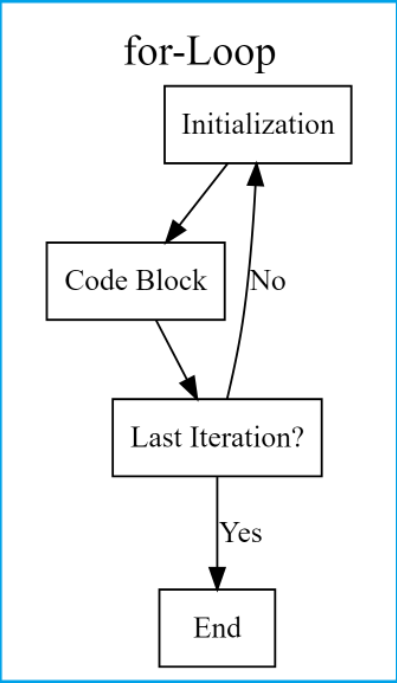

foo <- function(arg1, arg2, ...) {
# Code goes here
return(output)
}Packages and Basic Programming
R Packages
Commonly used R functions are installed with base R
R packages containing more specialized R functions can be installed freely from CRAN servers using function
install.packages()After packages are installed, their functions can be loaded into the current R session using the function
library()
Finding R Packages
How do I locate a package with the desired function?
Google (“R project” + search term works well)
R website task views to search relevant subjects: http://cran.r-project.org/web/views/
??searchterm will search R help for pages related to the search term
Handy R Packages
ggplot2: Statistical graphicstidyverse: Manipulating data structures (includesdplyr,tidyr,purr,tibble, etc packages)lme4: Mixed modelsknitr: integrate LaTeX, HTML, or Markdown with R for easy reproducible researchvegan: Ordination methods, diversity analysis and other functions for community and vegetation ecologists.phyloseq: Handling and analysis of high-throughput microbiome census dataggtree: an R package for visualization and annotation of phylogenetic trees with their covariates and other associated datacaret: The R equivalent to scikit learn: train / test split, cross validation, model performance metrics
List of some Handy R Packages - Definitely NOT comprehensive
Creating Your Own Functions
- Sometimes you just need to create your own function to tackle your data
- Especially if you notice yourself duplicating code
- “Remember that a function is essentially a”black box” into which you add some inputs and then receive some outputs. Building a function is about building that “black box”, and there are several components that go into it.” source
Code Skeleton:
Creating Your Own Functions (continued)
Example:
mymean <- function(data) {
ans <- sum(data) / length(data)
return(ans)
}
set.seed(4) #to generate the same random numbers each time run sample function
example <- sample(1:200, 15) #return 15 random values between 1 and 200 without replacement. without set.seed, will return different values each time
mymean(example) #mean of random generated data[1] 110.7333- Function Name:
mymean - Arguments (inputs):
data(data you want to calculate mean of) - Body:
ans <- sum(data) / length(data)(code you run to get desired output) - Return Value:
ans(the mean of the data)
If/Else Statements
Skeleton:
if (condition) {
# Some code that runs if condition is TRUE
} else {
# Some code that runs if condition is FALSE
}Basic Example:
x <- -4
if(x > 0){
print("Non-negative number")
} else {
print("Negative number")
}[1] "Negative number"If/Else Statements (Continued)
Example within a Function:
mymean <- function(data) {
if (!is.numeric(data)) {
print("Numeric input is required")
} else {
ans <- sum(data) / length(data)
return(ans)
}
}
mymean("dog")[1] "Numeric input is required"mymean(c(2,4,5,6,7))[1] 4.8Looping
Reducing the amount of typing we do can be nice
If we have a lot of code that is essentially the same we can take advantage of looping.
R offers several loops:
for,while,repeat.
for (i in 1:3) {
print(i)
}[1] 1
[1] 2
[1] 3For Loops (source)
 source
For Loop Example
for(i in 1:5) {# Head of for-loop
x1 <- i^2 # Code block
print(x1) # Print results
}[1] 1
[1] 4
[1] 9
[1] 16
[1] 25For Loop Example
final_shed <- read.csv("https://unl-statistics.github.io/R-workshops/r-intro/data/daily_shedding.csv")id <- c("pig_weight", "total_shedding", "daily_shedding")
for(colname in id) {
print(paste(colname, mymean(final_shed[, colname])))
}[1] "pig_weight NA"
[1] "total_shedding 17.4232730553356"
[1] "daily_shedding 3.76549250132986"While Loops
- Loop until a specific condition is met
i <- 1
while (i < 5) {
print(i)
i <- i + 1
}[1] 1
[1] 2
[1] 3
[1] 4The test_expression is i < 5 which is TRUE since 1 is less than 5. So, the body of the loop is entered and i is printed and incremented (i + 1)
This will continue until i takes the value 5. The condition 5 < 5 will give FALSE and the while loop exits.
Make sure the loop will eventually meet the condition, otherwise the loop will run infinitely.
Your Turn
Create a function that takes numeric input and provides the mean and a 95% confidence interval for the mean for the data (the t.test function could be useful - example in 4-DataStructures.R - will give you your confidence interval)
Add checks to your function to make sure the data is either numeric or logical. If it is logical convert it to numeric.
The diamonds data set is included in the
ggplot2package and is well known as a convenient data set for examples. It can be read into your environment with the functiondata("diamonds", package = "ggplot2"). Loop over the columns of the diamonds data set and apply your function to all of the numeric columns.